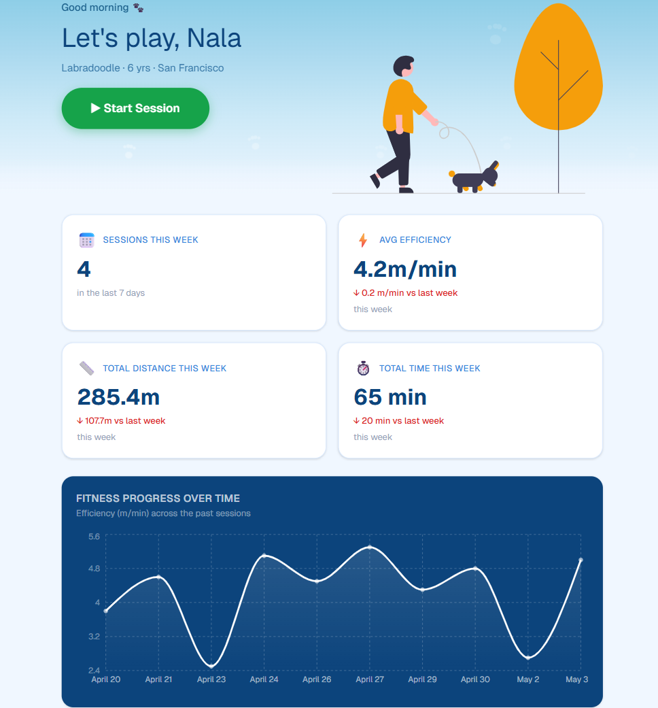
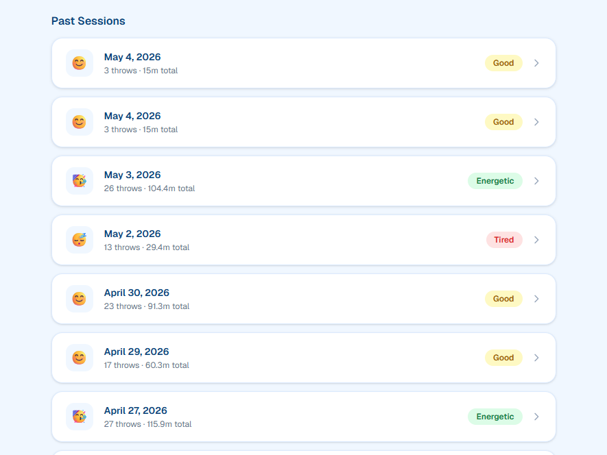

Team project · ME 100 · Jan 2026 – Jun 2026
Autonomous Dog Ball Thrower
100+ m of adaptive throws per session, with closed-loop fatigue detection, tested on a real dog.

The problem
Off-the-shelf ball launchers throw one fixed distance. They can’t be adjusted from across the yard, they have no sense of whether a dog is fresh or worn out, and they give owners nothing to look back on afterward.
What we built
An IoT launcher that reads how quickly a dog returns the ball and adapts the next throw, while streaming every session to a dashboard an owner can open from anywhere.
- Sense
- An RCWL-1601 ultrasonic sensor times the ball’s round trip. Return time stands in for how much energy the dog has left.
- Decide
- An ESP32 running MicroPython sets motor PWM from a rolling average of return times. Distance climbs while the dog is quick and eases back as it tires.
- Act
- Variable-distance launch, with the flywheel motor driven through a BJT + MOSFET stage with a flyback diode. Throw data flows over MQTT into Supabase and a Next.js dashboard: per-session stats, throw-by-throw charts, weekly trends, mood tags, and AI session summaries.
The hard parts
- Tolerancing the launch-and-grip mechanism across several print iterations to get reliable grip and release
- Tracing erratic start-up behaviour to active-low motor-driver logic
- Moving from fixed-threshold rules to an averaging control law for smoother speed changes
How it turned out
An end-to-end working prototype, tested with a real dog. It reliably detected ball returns, adapted launch speed from session to session, and logged and visualised real play data on the dashboard, with sessions running to 100+ m of throws.
The dashboard
Every session streams into a web dashboard. See the code on GitHub.


